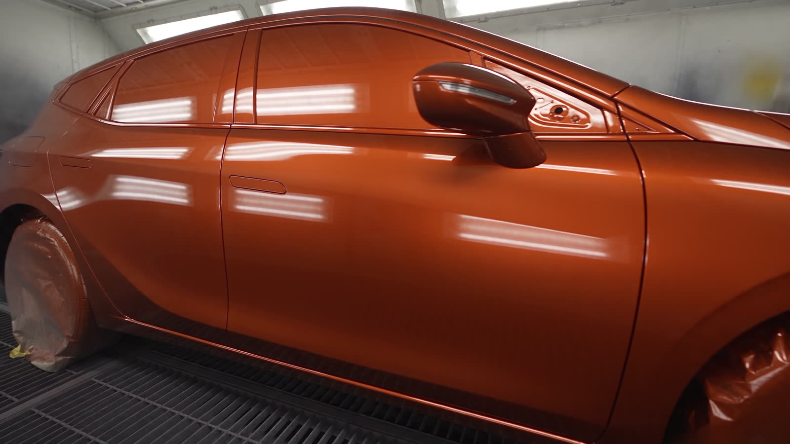
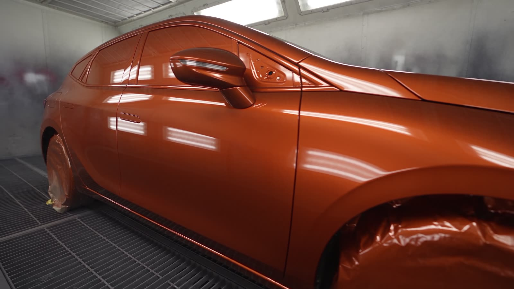

- 01Recepción
Revisamos el daño contigo, hacemos fotos y abrimos la orden de trabajo.
- 02Peritación
Coordinamos con el perito de tu aseguradora o te damos presupuesto cerrado.
- 03Chapa y aparejo
Desmontaje, enderezado o sustitución de piezas, y capa de aparejo.
- 04Cabina y horno
Color igualado, barniz y secado al horno para que dure como el de fábrica.
- 05Entrega
Montaje, control final y lavado. Listo para la carretera.
Talleres Pedraza: del golpe al brillo. Chapa, pintura y mecánica en Valdemoro desde hace más de 35 años.
Más de 35 años de chapa, pintura y mecánica en el centro de Valdemoro.
DeslizaTaller multimarca · C/ Tenerías, Valdemoro
Del golpe
al brillo.
Chapa y pintura con cabina y horno propios, mecánica general y pre-ITV. Particulares, empresas y taxis. Tramitamos el parte con tu aseguradora y, mientras tanto, no te quedas a pie.

de fábrica
- 0+
- años de oficio
- 0★
- valoración en Google
- 0
- aseguradoras concertadas
- 0
- naves en Valdemoro
Lo que haremos
Peritación, chapa y pintura
Lo vemos contigo, gestionamos el parte con tu seguro y lo devolvemos con el color igualado en cabina. Si lo necesitas, te dejamos coche de sustitución.
Tiempo orientativosegún daño · presupuesto sin compromiso
Llamar al taller02 / Servicios
Todo lo que tu coche necesita, bajo un techo.

- 01
Chapa
Reparación de golpes, abolladuras y sustitución de piezas de carrocería.
- 02
Pintura en cabina con horno
Igualación de color y secado al horno para un acabado de fábrica.
- 03
Mecánica general
Frenos, embrague, distribución, suspensión, diagnosis y averías.
- 04
Mantenimiento y revisiones
Aceite, filtros y puntos de revisión según el plan de tu fabricante.
- 05
Pre-ITV
Lo revisamos antes de la inspección para que pase a la primera.
- 06
Lunas y tintado
Sustitución de lunas y tintado de cristales.
- 07
Recogida y entrega
Pasamos a por tu coche y te lo devolvemos terminado. Consúltanos.
03 / Chapa y pintura
Así pasa tu coche
por el taller.
Igualación de color
Del aparejo gris al tono de fábrica.
Arrastra para comparar el aparejo con la pintura terminada y elige un color.
AparejoTerminado · Naranja cobre
04 / Con tu seguro
Te ahorramos el papeleo.
Somos taller concertado: hablamos con tu aseguradora y con el perito para que tú solo tengas que traer el coche.
- Mapfre
- Mutua Madrileña
- Pelayo
- Generali
¿Tu compañía no está en la lista? Llámanos y lo miramos.
- Coche de sustituciónPara que sigas con tu día.
- Recogida y entregaSi no puedes acercarte, vamos nosotros.
- Presupuesto sin compromisoAntes de tocar nada, sabes lo que cuesta.
- Taxis y empresasTambién concertados para taxis con Mutua Madrileña.
Lo que más repiten quienes nos dejan su opinión
- el acabado
- la rapidez
- el coche de cortesía
- encontrar la avería
- el trato
Valoración media 4,4 en Google.
05 / El taller
En el centro de Valdemoro.
C/ Tenerías 42, naves 8 y 928342 Valdemoro (Madrid)
| Lunes a jueves | 8:00–14:00 · 15:00–19:00 |
|---|---|
| Viernes | 8:00–14:00 · 15:00–17:00 |
| Sábado y domingo | Cerrado |